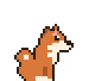
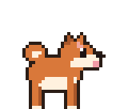
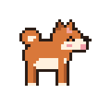

It watches Claude work so you don't have to
Snootle listens to Claude Code's hooks, right on your Mac. Start a long task, go read something, and let the pet tap you on the shoulder.
-
myapp: running commands…

While it works
A bubble says what Claude is doing: reading, editing, running commands.
-
myapp needs permission

When it's stuck on you
The pet jumps up the second Claude waits for a yes. No more finding a prompt that sat there for ten minutes.
-
myapp: done!

When the turn is done
A happy hop and a little sparkle. Works across several sessions at once.
Setup is one click: Snootle Settings → Connect Claude Code. Or from a terminal: /Applications/Snootle.app/Contents/MacOS/Snootle --connect-claude
Pick your pet
Six animals, four coats each, three sizes. Each one has its own trick.
Small, and a little bit useful
- Approve from the pet
- When Claude asks permission, a card above your pet shows exactly what it wants to run. Allow once, deny, or let the terminal ask as usual.
- Jump to Claude
- Click the pet when it's waving at you and the Terminal, iTerm, VS Code or Cursor window running that session comes to the front.
- Up to three pets
- Run a corgi, an axolotl and a chinchilla together. They wander, and say hello when they bump into each other.
- Knows how your Mac feels
- Sleepy on low battery, panting when it's hot, yawning late at night, and perfectly still in Low Power Mode.
- Levels and a daily recap
- Your pet levels up as you finish Claude tasks, focus sessions and typing streaks. Settings shows what you got done today.
- Reacts to you
- Paws along while you type and sweats when you're on a roll. Flick the cursor and it gives chase. Rub the cursor over it for hearts.
- Pick it up
- Drag it anywhere. Let go and it drops back to the bottom of your screen.
- Focus timer
- A 25/5 Pomodoro with the countdown in your menu bar. The pet tells you when to take a break.
- Stretch reminders
- Counts time you actually spend at the computer, so stepping away resets it.
- Light on your Mac
- Written in Swift with SpriteKit. Slows to 12 frames a second while it sleeps.
- Private
- No telemetry and no accounts. It counts key presses but never sees which keys.
Free corgi, one-time Pro
Every feature is free. Pro will add the other five animals; during the beta they're all unlocked.
Free
$0
- The corgi, in all four coats
- Claude Code status
- Focus timer and stretch reminders
Pro
$4.99 once
- All six animals, 24 coats
- New animals as they arrive
- Activate on your own Macs